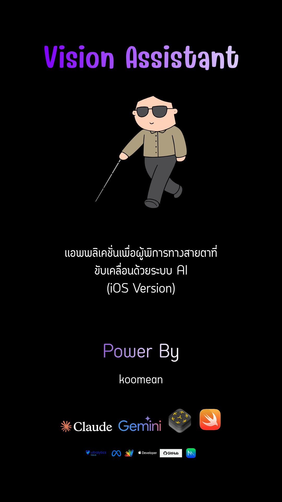

Private Visual Intelligence for iPhone ระบบวิเคราะห์ภาพอัจฉริยะแบบส่วนตัวบน iPhone
The camera sees objects, LiDAR measures distance, Whisper listens, a local LLM reasons, and TTS speaks. Everything runs directly on your Apple Neural Engine. No cloud, no tracking. กล้องมองเห็นวัตถุ LiDAR วัดระยะทาง Whisper รับฟังเสียง โมเดลภาษาขนาดใหญ่ประมวลผล และสังเคราะห์เสียงกลับ ทุกอย่างทำงานบน Apple Neural Engine ในเครื่องโดยตรง ไม่ต้องเชื่อมต่อคลาวด์ ปลอดภัยและเป็นส่วนตัว
Intuitive Mobile Interface อินเทอร์เฟซใช้งานง่ายบนมือถือ
A clean, dark mode SwiftUI experience designed for rapid, heads-up interactions. อินเทอร์เฟซภาษา Swift บนหน้าจอธีมมืด ออกแบบมาเพื่อการตอบสนองที่รวดเร็วและเป็นธรรมชาติ

Core Architecture Modules โมดูลสถาปัตยกรรมหลัก
A modular approach combining native Swift APIs with powerful edge computing frameworks. ระบบแบบแยกโมดูลที่รวม API ดั้งเดิมของ Swift เข้ากับเฟรมเวิร์กการคำนวณที่ขอบแบบทรงประสิทธิภาพ
Perception (YOLOv11) การรับรู้ภาพ (YOLOv11)
Real-time visual detection powered by YOLOv11 exported to CoreML. Harnesses the Apple Neural Engine (ANE) via Vision framework for sub-10ms performance. การตรวจจับภาพแบบเรียลไทม์ผ่านโมเดล YOLOv11 ที่แปลงเป็น CoreML ทำงานร่วมกับเฟรมเวิร์ก Vision บน Neural Engine ของ Apple ได้เร็วต่ำกว่า 10ms
LiDAR Depth Sensing ระยะชัดลึกด้วย LiDAR
Utilizes ARKit sceneDepth on Pro iPhones. Measures precise physical coordinates in meters, anchoring physical distance data to every YOLO object bounding box.
ใช้ ARKit sceneDepth บน iPhone รุ่น Pro เพื่อคำนวณและปักหมุดระยะห่างของวัตถุแต่ละชิ้นในแบบเมตรจริงได้อย่างแม่นยำ
Offline Speech (Whisper) การรับฟังออฟไลน์ (Whisper)
Local Voice Activity Detection (VAD) coupled with Apple Speech/WhisperKit. Seamlessly transcripts voice instructions into textual queries entirely local. ระบบตรวจจับเสียงพูด (VAD) ในเครื่อง ทำงานร่วมกับ Apple Speech และพร้อมอัปเกรดใช้งาน WhisperKit เพื่อถอดเสียงคำสั่งเป็นข้อความแบบออฟไลน์
Local LLM Reasoning การประมวลความคิด LLM
Integrates llama.cpp via LLM.swift. Feeds scene layout context (YOLO classes + LiDAR depth) to local models like Qwen or Llama 3 for intelligent answers.
ผสานรวม llama.cpp ผ่าน LLM.swift ส่งบริบทของสภาพแวดล้อม (ประเภทวัตถุและระยะ LiDAR) ให้โมเดลภาษาขนาดใหญ่ที่ประมวลผลบนเครื่อง (เช่น Qwen หรือ Llama 3)
TTS Synthesis การตอบกลับด้วยเสียงพูด
Brings answers to life using standard Apple iOS AVSpeechSynthesizer, with customizable support for Piper high-fidelity offline TTS via sherpa-onnx. แปลงข้อความคำตอบเป็นเสียงพูดธรรมชาติผ่าน AVSpeechSynthesizer ของระบบ หรือสามารถอัปเกรดเป็น Piper TTS คุณภาพสูงแบบออฟไลน์ผ่านเฟรมเวิร์ก sherpa-onnx
On-Device Model Hub ศูนย์จัดการโมเดลในเครื่อง
A catalog built in SwiftUI. Enables dynamic downloading, compiling, switching, and clearing weights per category (YOLO models, LLM binaries, and TTS voices). แค็ตตาล็อกและระบบดาวน์โหลดในแอป ให้ผู้ใช้สามารถเลือกดาวน์โหลด ติดตั้ง สลับสับเปลี่ยน หรือลบโมเดลและเสียงแต่ละประเภทได้อย่างอิสระ
Real-Time Processing Flow การไหลของข้อมูลแบบเรียลไทม์
Tap each stage of the pipeline to see how sensory data transforms into voice intelligence. แตะที่แต่ละขั้นตอนด้านล่างเพื่อเรียนรู้วิธีการทำงานในการเปลี่ยนข้อมูลภาพและเสียงสู่ความรู้ความเข้าใจ
1. Sensors 1. เซ็นเซอร์
2. Perception 2. การรับรู้
3. Coordinator 3. ผู้ประสานงาน
4. Local LLM 4. ประมวลความคิด
5. Output 5. การตอบกลับ
Stage 1: Raw Sensors Feed & Data Ingestion ขั้นตอนที่ 1: เซ็นเซอร์หลัก & แหล่งนำเข้าข้อมูล
A high-performance hardware sensor pipeline built on top of Apple's native frameworks. The high-FPS video feed is continuously captured using AVCaptureSession from AVFoundation. Simultaneously, on LiDAR-equipped devices (iPhone 12 Pro and later), scene depth is calculated in real-time at 30Hz using ARKit's sceneDepth, constructing a millimeter-precise 3D depth map. Meanwhile, the microphone stream continuously outputs raw PCM buffers monitored by an energy-based Voice Activity Detector (VAD) to track start and end points of speech off-cloud.
ชุดเซ็นเซอร์ประสิทธิภาพสูงทำงานผ่าน API ดั้งเดิมของ Apple ดึงภาพวิดีโอแบบสดเฟรมเรตสูงด้วย AVCaptureSession จาก AVFoundation ขณะเดียวกันสำหรับเครื่องที่มี LiDAR (iPhone 12 Pro เป็นต้นไป) ระบบจะสแกนความลึกรอบตัวผ่านแผนผัง sceneDepth ของ ARKit ที่ความถี่ 30Hz เพื่อคำนวณระยะเชิงพื้นที่จริงแม่นยำระดับมิลลิเมตร ควบคู่ไปกับการดึงสัญญาณเสียงไมค์ดิบ PCM มาตรวจสอบสัญญาณการพูดผ่านตัวประมวลผล VAD ในเครื่อง
Stage 2: Real-time Perception Engine (CoreML) ขั้นตอนที่ 2: ระบบวิเคราะห์การรับรู้ภาพจริง (CoreML)
The raw image frames are passed directly to YOLODetector.swift, which runs the local YOLOv11 object detection model compiled into .mlmodelc format. This runs 100% on-device on the Apple Neural Engine (ANE) via the Vision framework, achieving sub-10ms latencies. Once objects (such as person, cup, chair, door) are detected and bounding boxes are identified, DepthSampler.swift reads the center of each bounding box and matches it with the ARKit LiDAR depth buffer to determine the precise distance in meters for each detection.
เฟรมภาพสดจะถูกส่งไปประมวลผลที่ YOLODetector.swift ซึ่งรันโมเดล YOLOv11 ที่แปลงเป็นฟอร์แมต .mlmodelc เพื่อประสิทธิภาพความเร็วสูงสุดบนชิป Apple Neural Engine (ANE) ผ่านเฟรมเวิร์ก Vision ของระบบด้วยความเร็วเฉลี่ยต่ำกว่า 10ms เมื่อตรวจพบพิกัดวัตถุ (เช่น คน, โทรศัพท์, แก้วน้ำ) DepthSampler.swift จะนำพิกัดจุดกึ่งกลางของวัตถุไปเทียบกับความลึกใน LiDAR depth buffer เพื่อวัดระยะเชิงฟิสิกส์จริงออกมาเป็นหน่วยเมตร
Stage 3: Scene Context Builder & Orchestration ขั้นตอนที่ 3: รวมบริบทและควบคุมการทำงาน
The AssistantCoordinator serves as the central brain orchestrating the event loop. Once VAD detects that user speech has ended or a message is submitted, the coordinator grabs the latest SceneSnapshot (holding the active list of detected YOLO classes and their LiDAR depth dimensions). The SceneContextBuilder immediately translates this spatial layout into a structured, semantic text description (e.g. "A cup at 0.4 meters, a laptop at 0.8 meters"). This scene summary is prepended to the system prompt to feed the LLM.
AssistantCoordinator ทำหน้าที่เป็นศูนย์กลางคอยควบคุมการทำงาน เมื่อ VAD ตรวจพบว่าผู้ใช้พูดจบหรือเมื่อผู้ใช้พิมพ์ส่งคำถาม ระบบจะบันทึกสถานะแวดล้อมล่าสุด SceneSnapshot (ซึ่งรวมประเภทวัตถุและระยะเชิงพื้นที่จริงจากกล้องและ LiDAR เช่น "แก้วน้ำอยู่ใกล้ห่าง 0.4 เมตร, คอมพิวเตอร์ห่าง 0.8 เมตร") จากนั้น SceneContextBuilder จะนำพิกัดเหล่านี้ไปแปลงเป็นข้อความบรรยายภาษาธรรมชาติ เพื่อนำไปแนบเป็น System Prompt ให้โมเดลภาษาเข้าใจสภาพแวดล้อมแวดล้อมรอบตัวก่อนวิเคราะห์ตอบกลับ
Stage 4: Local LLM Processing (llama.cpp) ขั้นตอนที่ 4: โมเดลภาษาประมวลความคิดในเครื่อง (llama.cpp)
The compiled scene prompt, chat history, and user question are directed to the offline LLMService. Leveraging the LLM.swift Swift Package and the compiled C++ core of llama.cpp, the app runs large language models (like Qwen-2.5-7B or Llama-3-8B) on the unified memory of Apple Silicon with GPU acceleration. The model streams token responses word-by-word back to the coordinator, updating the chat bubbles on screen instantly with zero network latency, keeping user query data private and secure on-device.
ข้อความข้อมูลห้องสนทนา ประวัติแชต และคำบรรยายพื้นที่แวดล้อมจะถูกป้อนเข้าสู่ LLMService ซึ่งทำงานร่วมกับแพ็คเกจ LLM.swift และแกนภาษา C++ ของ llama.cpp เพื่อรันโมเดลภาษาขนาดใหญ่ เช่น Qwen-2.5-7B หรือ Llama-3-8B บนหน่วยความจำร่วม (Unified Memory) ด้วยการ์ดจอผ่าน Metal API ระบบจะทำการถอดรหัสคำตอบแบบ Token Streaming ค่อย ๆ ส่งตัวอักษรกลับมาแสดงผลทันทีโดยปราศจากความหน่วงจากอินเทอร์เน็ตและเก็บข้อมูลส่วนตัวไว้บนเครื่อง
Stage 5: Voice Feedback & UI Update ขั้นตอนที่ 5: การสังเคราะห์เสียงพูดและการแสดงผล
As word tokens stream in, the SwiftUI chat interface renders the updates fluidly. Concurrently, sentences are queued into the TTSService. High-fidelity audio is synthesized offline. By default, it uses Apple's native AVSpeechSynthesizer, but it can be configured to use a custom Piper TTS model via the sherpa-onnx framework. The synthesized PCM audio is queued and played via an audio node, creating a seamless, interactive voice feedback loop for eyes-free navigation.
เมื่อโมเดลประมวลผลคำตอบออกมา หน้าจอข้อความจะอัปเดตกล่องแชต SwiftUI แบบเรียลไทม์ ขณะเดียวกันประโยคคำตอบจะถูกจัดสรรเข้าคิวส่งให้ TTSService เพื่อสังเคราะห์เสียงพูดออฟไลน์คุณภาพสูง โดยระบบรองรับทั้งสังเคราะห์เสียงพูดเริ่มต้น (`AVSpeechSynthesizer`) ของ iOS หรือโมเดลสังเคราะห์เสียงที่เป็นธรรมชาติของ Piper TTS ผ่านเฟรมเวิร์ก `sherpa-onnx` เพื่อนำสัญญาณ PCM ที่ได้ส่งออกไปเปิดผ่านลำโพงของ iPhone ทำให้ผู้ใช้สนทนาโต้ตอบและรับทราบข้อมูลได้อย่างราบรื่นโดยไม่ต้องมองจอ
Developer Quickstart Guide คู่มือการเริ่มต้นใช้งานสำหรับนักพัฒนา
Configure keys, setup dependency packages, and export models to compile the app. วิธีตั้งค่าคีย์ ตั้งค่าแพ็คเกจ และคอมไพล์โมเดลเพื่อให้แอปเริ่มทำงานบนอุปกรณ์ของคุณ
Configure Settings & Key File การตั้งค่าไฟล์ APIKeys.swift
Define keys in VisionAssistant/Shared/Settings/APIKeys.swift. Standard local fallbacks are active if empty.
กำหนดคีย์ในไฟล์ APIKeys.swift แอปจะใช้วิธีคำนวณสำรองในเครื่องถ้าปล่อยให้ว่างไว้
import Foundation
struct APIKeys {
// Used for online TTS (OpenAI) and fallback LLM (GPT-4o-mini)
static let openAIKey = "your-openai-api-key-here"
// Used for ultra-fast online LLM inferences (Llama 3, Mixtral)
static let groqKey = "your-groq-api-key-here"
// Note: Do not commit your real api keys to public repositories!
}Create App Structure & Set Permissions สร้างโปรเจกต์ Xcode และกำหนดสิทธิ์
Follow these steps to initialize the SwiftUI project correctly in Xcode 16. ทำตามขั้นตอนนี้เพื่อสร้างแอป SwiftUI ใน Xcode 16
VisionAssistant, SwiftUI interface.
เปิด Xcode → File → New → Project เลือกประเภท App ตั้งชื่อโครงการว่า VisionAssistant ใช้หน้าตา SwiftUI
ContentView.swift. Drag all directories (App, Core, Features, Shared, Resources) to Xcode target groups.
ลบไฟล์ ContentView.swift ที่สร้างให้อัตโนมัติออก ดึงโฟลเดอร์โครงการทั้งหมดใส่ใน Xcode targets
Info.plist.additions.xml:
กำหนดสิทธิ์การใช้กล้อง LiDAR และไมโครโฟน ดึงไฟล์ Info.plist.additions.xml เข้าใน Target Info:
<key>NSCameraUsageDescription</key>
<string>Camera access is needed to detect objects using YOLOv11.</string>
<key>NSMicrophoneUsageDescription</key>
<string>Microphone access is needed for speech-to-text input.</string>
<key>NSSpeechRecognitionUsageDescription</key>
<string>Speech recognition is used to understand your spoken commands.</string>Export YOLOv11 to CoreML Package แปลงโมเดล YOLOv11 ให้เป็น CoreML
Ultralytics models can be easily compiled for the Apple Neural Engine using Python. ใช้ไลบรารี Python ในการแปลงโมเดลของ Ultralytics ให้เป็นรูปแบบ CoreML สำหรับ Neural Engine
# Install python packages
pip install ultralytics coremltools
# Export YOLOv11 model with NMS parameters included
yolo export model=yolo11n.pt format=coreml nms=True
# Note: This outputs "yolo11n.mlpackage". Drag and copy it
# directly into your Xcode build target resources.